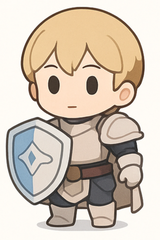
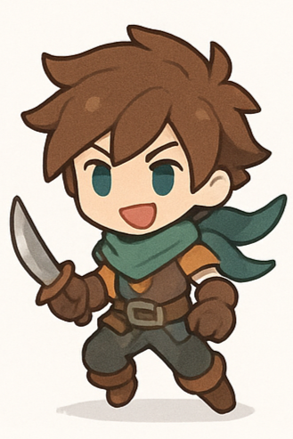
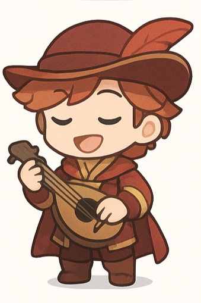

内外DIRECTION
ひとりで深める時間と、人とつながる時間。力が湧くのは、どちらから？
内向 I外向 E
あなたの内側には、どんな冒険者がいるだろう。
温度・深さ・硬さ・内外。4つの軸をたどって、
いまのあなたの思考と反応を読み解く性格診断。
全30問 · 直感で回答 · 登録不要

I–CDR / GUARDIAN静謐の守護者
E–HSF / ADVENTURER旋風の冒険者
I–HDF / POET深紅の詩人性格をひとつに決めつけるのではなく、
いまの自分がどこにいるかを知るための、小さな地図です。
ひとりで深める時間と、人とつながる時間。力が湧くのは、どちらから？
冷静に見つめるまなざしと、心を動かす情熱。あなたの反応の温度は？
広く軽やかに試すか、じっくり掘り下げるか。思考の潜り方を見つめます。
流れに合わせて形を変えるか、筋道を立てるか。考え方のしなやかさを読みます。
30の問いに、スライダーで回答。正解はありません。いまの自分に近い位置を選びましょう。
4つの軸のバランスから、思考と反応の傾向へ。中間や揺らぎも、あなたらしさの一部です。
近いタイプや対照的なタイプを見比べて。いつもと少し違う自分へのヒントが見つかります。
少し立ち止まって、自分の内側をのぞいてみよう。
診断の旅をはじめる